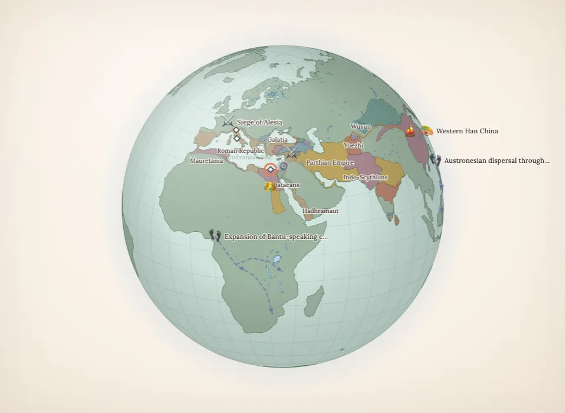

History is happening everywhere
Choose a year. See what people across the world were building, fighting for and imagining around the same time.

51 BC · Cleopatra’s worldExplore this story →The past gets stranger when you see the whole world at once.
Start with a guided journey, compare overlapping lives, or follow one unlikely event. Every story connects its dates and places to sources.
What was happening in the world when Cleopatra lived?
Travel from Alexandria to Han China, Meroë and a Zapotec city in a guided discovery of one lifetime.
Follow Cleopatra's world → 1610 · LIVES THAT OVERLAPShakespeare and Tokugawa Ieyasu were contemporaries.
An English playwright and Japan's first Tokugawa shogun shared decades of history. Compare their lifespans and explore their worlds.
Meet them in the same year → 1859 · SAN JUAN ISLANDSA pig nearly started a war between Britain and America.
One disputed boundary, one shot pig and two military forces produced a twelve-year standoff without a human casualty.
See the world in 1859 →Three steps into the past.
Explore a growing collection of sourced events, people and reconstructed maps. Nearby events and longer historical periods are labeled separately.
Choose a time
Enter a year, choose an era or jump to a recorded event. Move between dinosaur fossil ages and human history.
Select a place or event
Read events near your chosen year alongside clearly labeled historical context. Open a marker or use search to find a subject.
Follow a connection
Discover overlapping lives, compare two dates or follow a guided story. Read the sources and share your view.
Where in history will you begin?
Drag the timeline from prehistory to 2026.
Open History All Around →